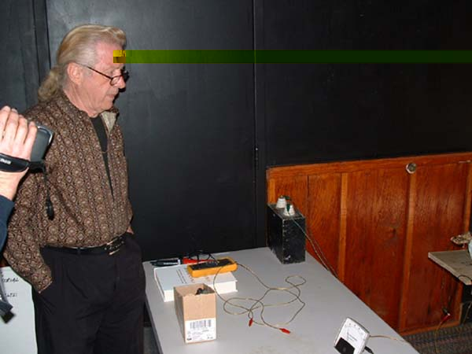
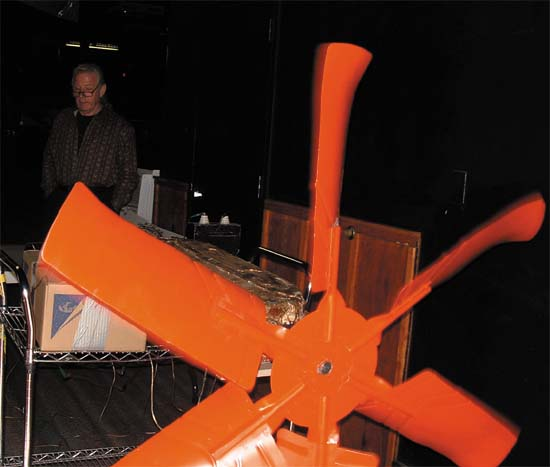
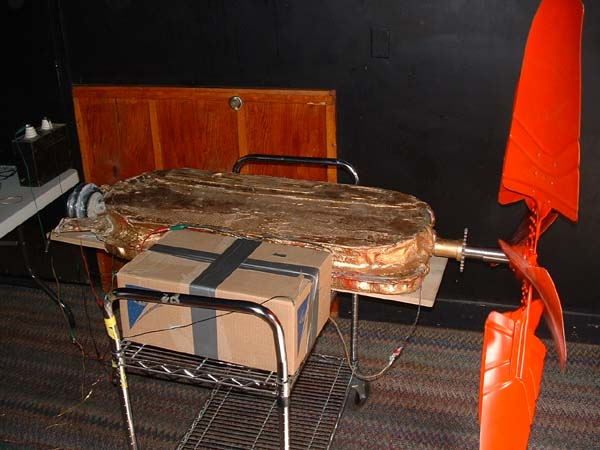
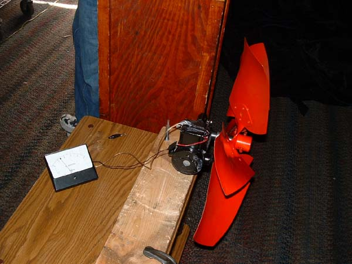
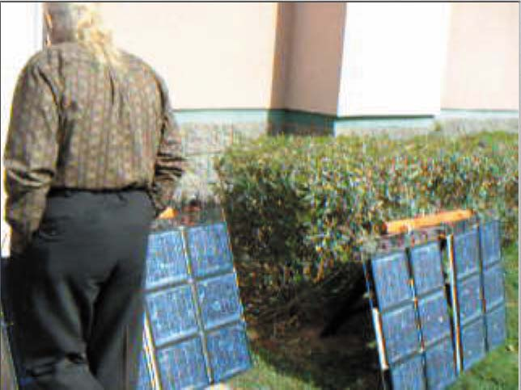

By Vencislav Bujic
All the data and information on this web site is for free and may be used only for private
and/or educational purposes, but not for commercial purposes and/or applications.
Short video from demonstration, you need
QuickTime player
or Windows Media Player,
or Real Player
to view the video, you can also download the video, just click on the link bellow (big file - 4,64 MB):
Video from demonstration of Newman's motor
The camera was in front of big Newman's motor, there you can see the blade of motor
rotating at about 30 RPM (revolutions per minute), Mr. Newman is behind the motor, on
the right hand side, few people are standing on the left, and I'm behind the camera.
Joseph Newman at the table with measurment instruments,
also with high voltage capacitor which collects counter-EMF,
behind the Newman's big motor:

Front view on big Newman's motor, while Joseph Newman is still standing
behind the table with instruments, the blade is rotating at around 30 RPM,
and diameter is around 1,60 meters, weight around 40 KG, and ampermeter was
showing (oscilating) 25-35 miliampers, whenever there was change of direction of
the current (once per second), it will jump to around 35 miliampers, from 25 miliampers:

Side view of big Newman's motor, the box in front of it collects
high voltage, high-frequency counter-EMF and transforms it, and then
directs to the capacitor on the table, which is visible on the left side
of the picture or on the above, top picture:

Image of small, conventional motor, note that blade is rotating although
its not visible at the picture, the diameter of the blade was about 0,5 meters
the RPM in area of few hundreed, and the ampermeter connected to it was showing constant 2,75 miliampers:

Those are two pairs of solar cell panels, area size around 0,7 square meters,each for one motor,
one one panel was source of power for the standard electrical motor, and the same size solar panel
(on the left) for Newman's electric motor. When somebody was standing in front of solar panel, like
Joseph Newman is standing in front of panel that feeds his motor, it kept rotating with the same speed,
but when solar panel that feeds small, conventional electric motor was blocked by somebody, then it
will significantly reduce the speed of rotation, or totaly stop:

more to come...
18 Februar 2002
E-mail: VenciB@yahoo.com